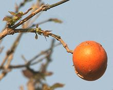

SAFARI
Users
Families
The four Families of Order Gentianales that have culinary uses are listed here, as well as the most important food product for each family. The pages linked to also include a few other genera and species of particular interest - culinary or not.
Gentian Family
- Gentianaceae- Gentian Roots: beverage flavoring and medicinal.
Dogbane Family
- ApocynaceaeLoroco Flowers:
used in Central American cuisine.Pakalana Vine:
used in South and Southeast Asian cuisines.River Leaf:
used in soups in Vietnam.Oleander:
consumed to attempt suicide, usually unsuccessful.
Strychnine Family
- LoganiaceaeMonkey Oranges:
fruit eaten in Africa.Strychnine & Curare
.
Madder Family
- RubiaceaeQuinine:
flavor in tonic water - medicinal.Coffee:
beans used for a beverage of some note.
Gentian Family
- Gentianaceae
Yellow Gentian [Bitter root, Bitterwort; Gentiana lutea]
[Bitter root, Bitterwort; Gentiana lutea]
The most commonly used Gentian for medicinal and bitter flavoring purposes is the Yellow Gentian, native to the mountains of central and southern Europe, though other species are said to also work well. While dried root is most used, fresh foliage is also used. This root provides a bitter flavor used in Agnostura bitters and the
American soft drink Moxie as well as other drink flavorings and stomach
and digestive remedies. It was sometimes used in making beer, until hops
became the predominant bitter for that use.
Photo by Brend Haynold distributed under license Creative
Commons
Attribution-ShareAlike v2.5 Generic.
Common Centaury[European Centaury; Centaurium erythraea]
This plant is often used as a substitute for Yellow Gentian, as it is
more common and more widespread. In addition to a wide distribution in
Europe, it is also found in North Africa and has been introduced into
North America and eastern Australia. As with the Yellow Gentian, it is
bitter and considered an effective treatment for digestive and liver
problems. It is also considered useful for it's powerful antioxidants.
Centaury is most commonly consumed as an herbal tea.
Photo by Brend Haynold distributed under license Creative
Commons
Attribution-ShareAlike v3.0 Unported.
|
Strychnine Family
- LoganiaceaeThough this family provides several of the most dreadful botanical toxins known, among them strychnine and curare, it also provides edible fruits (but don't eat the seeds).
Monkey Oranges[Strychnos spinosa, S. pungens, S. cocculoides]
These three species of Strychnos, all native to southern Africa, produce
ball shaped fruit up to 4-3/4 inches diameter that turns yellow when
ripe. Inside the hard shells are tightly packed seeds, surrounded by an
edible sweet/sour pulp, the sourness coming from citric acid. These
fruits are eaten by the indigenous peoples of the regions and by many
African animals. The hard seeds are somewhat toxic, and should not be
eaten.
Photo of S. Spinosa by Damien Farrell distributed
under license Creative Commons
Attribution-ShareAlike v3.0 Unported.
Curare[Strychnos toxifera, S. pungens, S. cocculoides] The primary, in fact only, culinary use for this plant is in acquiring wild animals to eat. Curare poison made from this plant has been used by the indeginous people of the South American rain forests for hundreds, perhaps thousands of years. Arrows and blowgun darts are dipped into concentrated toxin before use. An animal hit by such a poisoned dart dies quickly of asphyxiation, as the voluntary muscles are relaxed until the lungs don't work. The toxin is harmless ingested, so an animal so killed can be safely eaten. Interestingly, sublethal doses of curare have been found effective
in treating strychnine poisoning and tetanus (see next paragraph).
Illustration from Koehler's Medicinal-Plants 1887,
copyright expired.
Strychnine Tree [Strychnos nux-vomica] This tree, native to India and Southeast Asia, produces hard ball shaped green fruit that turn orange when ripe. The seeds within the fruit, and the flowers, contain the powerful and very unpleasant toxins strychnine and brucine. The bark is also toxic, but contains mostly brucine. Strychnine was used medicinally before World War II, but not since. The effects of this toxin is violent muscle convulsions, even to the
point of bending over backwards until the spine snaps. This is very
similar to the effects of tetanus, but with a major difference. With
tetanus the participant is usually pretty dazed, but with strychnine
the mind remains clear, so the process can be enjoyed to the very end -
but there will be no screaming because the jaws are locked tight.
Photo by J.M.Garg distributed under license Creative
Commons
Attribution-ShareAlike v3.0 Unported.
|